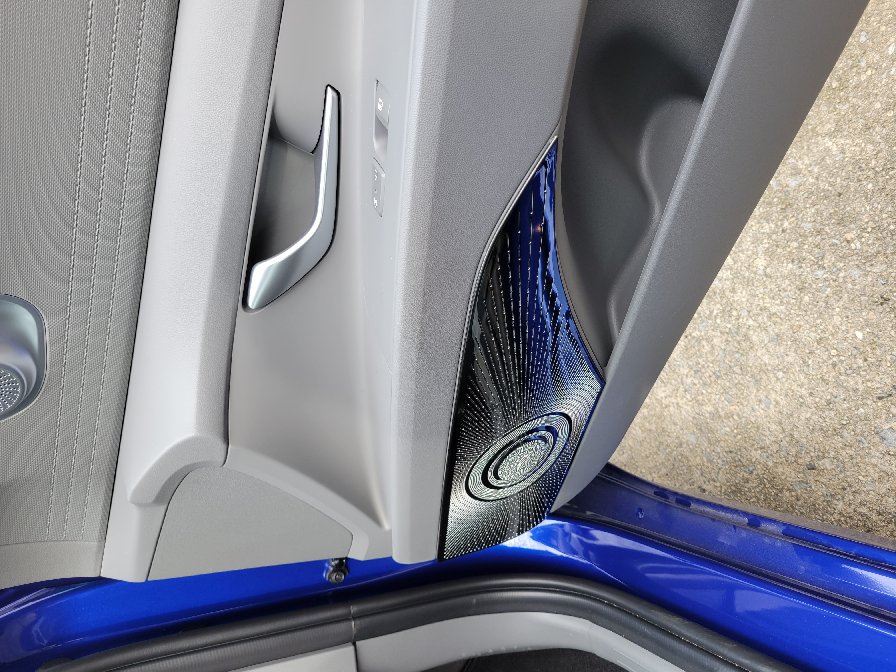
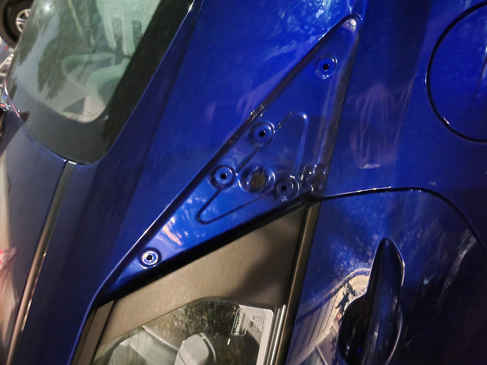
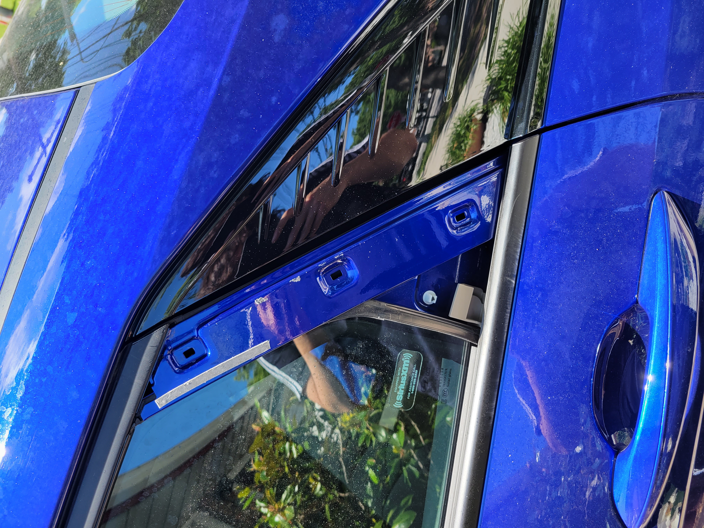
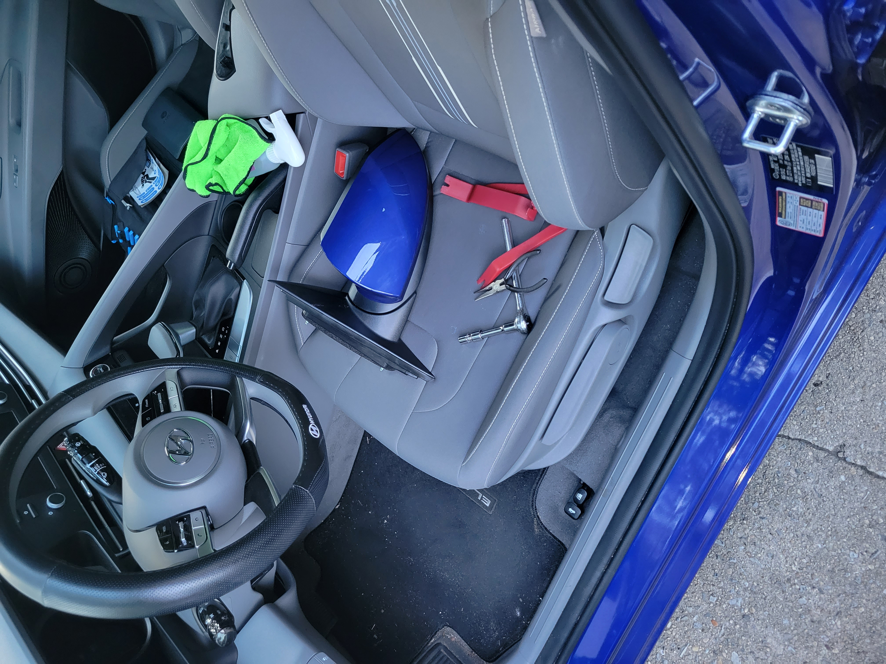
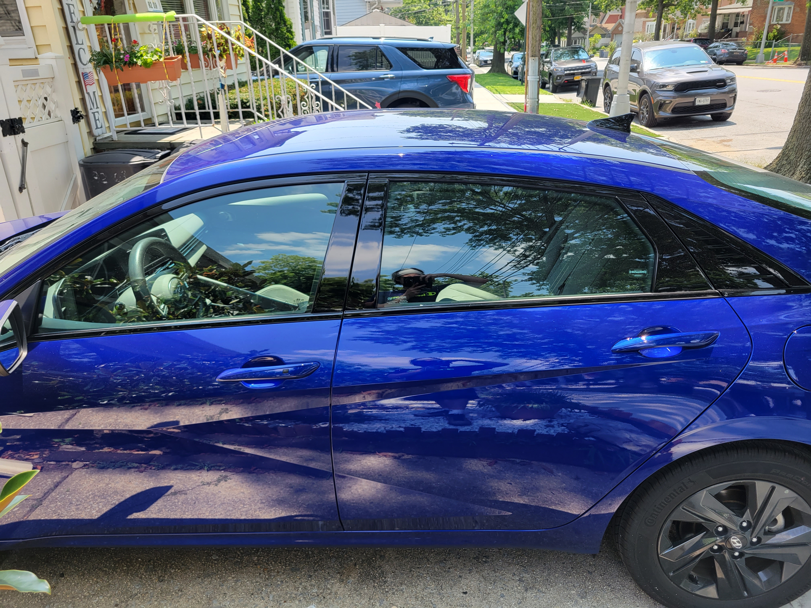
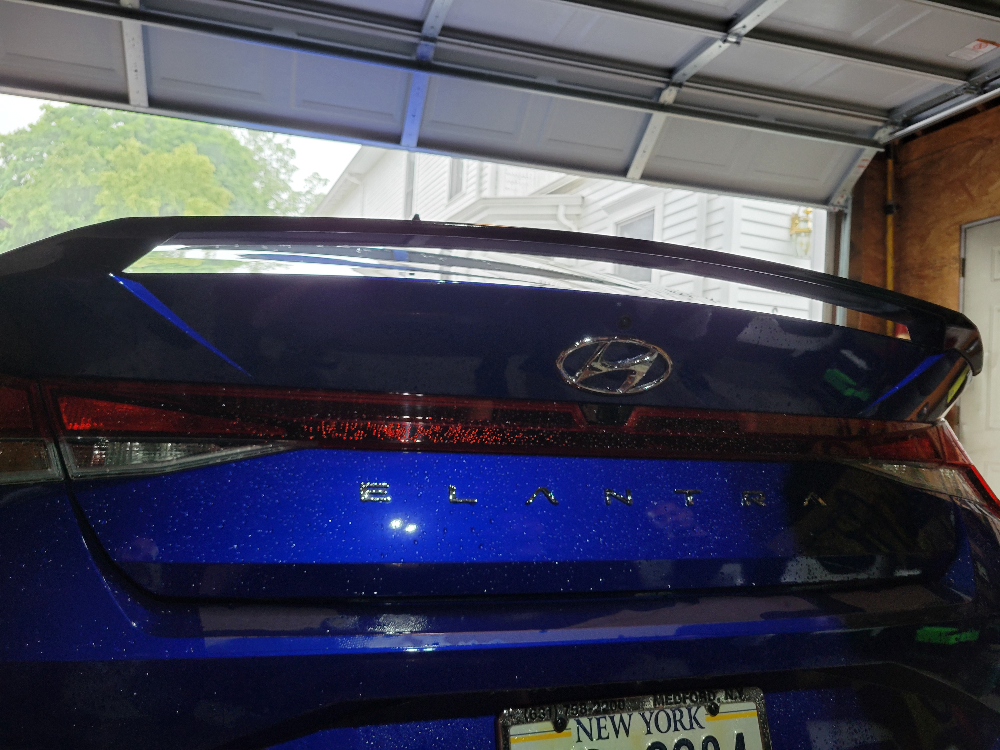

This page is dedicated to my interest in cars. I was never into cars as a child, but as I got older I started to appreciate cars more.
While I really only enjoy how cars are styled and not so much their mechanical specifications, I still find myself looking at cars both new and old -
those with modern looks and those with older and perhaps even stranger designs. In the nav bar above, I have my top 3 favorite car brands. They each link to a seperate page
that covers my top 3 favorite cars from those brands.
My Car and What it Means to Me
My car means the world to me. It's my biggest purchase ever, as it's something that I worked for and earned all on my own. At the time, purchasing this car
was a turning point in my adulthood; it was confirmation that I was on the right track in life and that everything would only get better.
What I've Done to My Car... So Far






Changed the OEM matte black panels to new OEM gloss black ones.
wapped the OEM halogen headlights for aftermarket LED ones.
Added speaker covers + leather door protectors for interior.
For a time, I added a spoiler, but the adhesive wasn't strong enough; for now, it remains off the car...
I'm always detailing my car and I always love the end result!
What I Want Done in the Future!
Install an aftermarket grill that would allow for better airflow + looks nicer. Check it out here!
Add an aftermarket (or OEM if possible) sunroof to my car.
Get legal permissions to tint my windows and then go for a reasonable tint level.
DIY paint job on some of the grey plastics and turn them black.
Whatever else I can think of! I use a lot of different websites for inspiration.